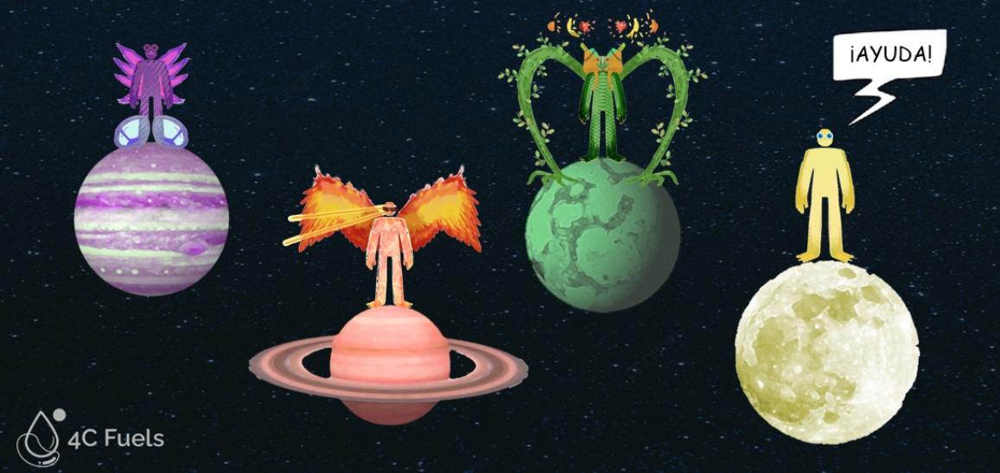

¡Ciencia Para todos!
Enseñando Biología Sintética en Institutos
Como parte del Integrated Human Practice del proyecto, hemos organizado una serie de talleres para jóvenes de entre 15 y 18 años con el fin de enseñar conceptos básicos de biología sintética a través de una estrategia de gamificación. Nuestros objetivos han sido la generaión de conciencia en torno al concepto de sostenibilidad así como promover el pensamiento crítico. Además, hemos presentado las ideas principales del proyecto de 4C_Fuels, y hemos analizado la opinión de las clases antes y después de nuestra intervención, respecto a los conocimientos de biología sintética y los aspectos de sostenibilidad. La experiencia ha sido fundamental para nuestro análisis del nivel de concienciación dentro del sector más joven de la sociedad.
En 4C_Fuels creemos que a través de la Educación podemos cambiar el mundo para bien. Con estas actividades, transmitimos nuestros conocimientos sobre biología sintética a las generaciones más jóvenes, abriendo la posibilidad de que nuestros oyentes tengan una mejor comprensión de las posibilidades que existen para cambiar nuestra modelo social hacia una economía más sostenible y en la que ellos podrían tener mucho que decir.
Esto no sería posible sin un cambio de mentalidad de la sociedad en la que vivimos. Para ello, nos hemos dirigido a los estudiantes de Bachillerato que están a punto de iniciar sus estudios universitarios para que quizás cambien su visión original (si es que la había) sobre la biología sintética y, por tanto, desvelen los beneficios que la biología sintética puede aportar a la humanidad y a nuestro planeta, permitiendo al mismo tiempo que en un futuro próximo se consiga una mayor inclusividad e igualded entre las personas con formación científica
Nuestro proyecto busca identificar sus principales grupos de interés adaptando una estrategia de marketing conocida como Modelo KAN. Una parte muy importante de la comunidad local con la que más interactuamos son los estudiantes y, basándonos en nuestras experiencias personales en el instituto, no recordamos haber oído ni una sola vez el término "biología sintética". Esta es una muy buena razón por la que hemos decidido dirigirnos a estudiantes de 15 a 18 años de dos colegios diferentes de Madrid para que puedan asistir a este taller. Hemos tenido la oportunidad de visitar los colegios La Salle Maravillas y Juan de Valdés y por ello les agradecemos enormemente su receptividad e interés en nuestro proyecto.
Para afrontar el reto de explicar la Biología Sintética a los jóvenes, sentimos la necesidad de acomodar conceptos complejos en una estructura más comprensible para todos. Por eso creamos una presentación interactiva con la que los alumnos podían decidir qué "Superpoderes" les gustaría otorgar a su personaje.

Este es sólo un ejemplo de cómo la complejidad que rodea a la biología sintética puede descomponerse en metodologías más sencillas y divertidas para aprenderla. Obviamente, la creación de un ser sobrenatural tiene una relación directa con las posibilidades de la biología sintética. Los conceptos básicos de la regulación de la expresión génica, como son las regiones promotoras, los genes codificantes y los terminadores , se han introducido utilizando un enfoque de gamificación. Esto se ha demostrado aplicando diferentes capas de personalización a nuestro personaje y a través de su combinación, pudimos mostrar a los participantes un ser muy diferente. Al final de la actividad se han presentado las similitudes entre esta "historia" y con lo que hacemos en el laboratorio, explicando brevemente los principios clave de los objetivos de 4C_Fuels e introduciendo conceptos cruciales como sostenibilidad, economía circular y biorrefinería.

También hubo tiempo para que los estudiantes vieran con sus propios ojos cómo jugar con los conceptos aprendidos en nuestro taller. Gracias a un juego impreso en 3D que representa los promotores, las regiones codificantes de los genes y los terminadores utilizados en el laboratorio, los estudiantes pudieron tener una visión más realista de lo que hacemos cuando manipulamos el ADN.
Para comprobar la influencia de nuestro taller, realizamos dos encuestas durante el evento: una al principio, para tener una idea del punto de partida, y otra al final de la presentación. Ambas encuestas incluían exactamente las mismas preguntas y de este modo podíamos comparar fácilmente los resultados de antes y después de nuestra intervención. Al final conseguimos encuestar a 96 personas en total y los resultados obtenidos fueron bastante sorprendentes para nosotros.

Los resultados...
La primera pregunta que se hizo fue mencionar tres cosas en las que pensarían cuando se les presentara el término "Biología Sintética". Con las respuestas, hemos creado dos mapas de palabras distintos para representar mejor las palabras que se mencionaron más de una vez. Al analizar los datos recogidos, se observó que había muchas más respuestas "no sé" en la encuesta inicial que en la final y se estableció no presentar esta frase en los Mapas de Palabras, por lo que parece que el Mapa de Palabras inicial tenía un número menor de palabras que el final. Ambos mapas de palabras se crearon directamente con las palabras introducidas por los alumnos, ajustándose bastante a la realidad, aunque son similares entre sí, demuestran un claro cambio en aquellos conceptos principales que definen la disciplina de la biología sintética.
WordMap Inicial
WordMap Final
Los principales conceptos clave (promotor, gen, terminador) mencionados en nuestra charla son bien conocidos por los biólogos y los investigadores de biotecnología, pero descubrimos que entre el 20 y el 40% de los estudiantes de secundaria nunca habían oído hablar de ellos. Esto nos dio la oportunidad de enseñarles y cumplir nuestra misión divulgativa durante el taller.
De hecho, como podemos ver en el gráfico de resultados, nuestros alumnos pudieron mejorar su comprensión de estos conceptos, logrando un índice considerablemente mayor de resultados correctos en la encuesta final en comparación con la inicial. Después de nuestra intervención, los alumnos han aprendido los conceptos básicos de synbio logrando una media del 80% de respuestas correctas en la encuesta final realizada.
Otra serie de preguntas realizadas fueron para valorar de 1 (no me interesa o no es importante) a 5 (estoy súper interesado o es muy importante) su interés por la biología o cualquier campo relacionado con está, así como su opinión sobre sus potenciales aplicaciones para combatir el cambio climático y crear una sociedad más sostenible. En una escala de 1 a 5, se alcanza una media de 4 puntos en la concienciación de los alumnos encuestados. El taller ha tenido un ligero impacto en los alumnos, pero es destacable descubrir que tras la actividad casi el 80% de una clase de ciencias de un instituto español se interesa por la biología y disciplinas afines.
Tras el feedback recibido y el éxito de nuestra actividad en los institutos, nos comprometemos a seguir promoviendo la biología sintética con las nuevas generaciones. Ellos son los que pueden decidir sus propios caminos de estudio por ahora, pero un día serán científicos y expertos en su campo y es de buena importancia preparar a los jóvenes para los retos que puedan enfrentar en el futuro y proponerles algunas herramientas que puedan usar para resolverlos, como es la biología sintética.
Nuestro objetivo en 4C_Fuels es dibulgar noticias e información relacionada tanto con nuestro proyecto como con la biología sintética en general, y pretendemos hacerlo a través de nuestros canales de medios sociales no sólo para las generaciones jóvenes sino también para el público en general, buscando el formato más pertinente en cada circunstancia. Nos gustaría animar a otros equipos iGEM, instituciones, empresas y gobiernos a que promuevan la Biología Sintética a través de la Educación, ya que es una de las muchas soluciones en las que podemos confiar para hacer frente a problemas actuales como el cambio climático. No basta con hacer buena ciencia, sino también hacer a la sociedad partícipe de ella.
-
Referencias
[1] https://blogs.elpais.com/eco-lab/2013/09/cuanto-consume-de-verdad-un-smartphone.html
[2] https://www.iea.org/reports/key-world-energy-statistics-2020
[3] https://datos.enerdata.net/energia-total/datos-consumo-internacional.html
[4] https://www.europarl.europa.eu/news/en/headlines/society/20200109STO69927/europe-s-one-trillion-climate-finance-plan
[5] https://www.greentechmedia.com/articles/read/just-how-much-business-can-batteries-take-from-gas-peakers#gs.bn4i7x
[6] https://www.ge.com/power/transform/article.transform.articles.2018.oct.storage-threat-to-peaker-plants#
[7] https://pv-magazine-usa.com/2018/11/08/california-regulators-approve-the-worlds-largest-battery-projects/
[8] https://ec.europa.eu/programmes/horizon2020/en/news/electrification-transport-system-expert-group-report-0
[9] https://www.nature.com/articles/srep12967 (Duración baterias litio a Alta T)
[10] https://pubs.acs.org/doi/10.1021/cr300205k (liquid metal batteries)
[11] https://ambri.com/benefits/
[12] https://www.sciencedirect.com/science/article/pii/S254243511830583X (Revisión sobre tecnologías de almacenamiento energético)
[13] https://www.datacenterdynamics.com/en/news/terrascale-deploy-ambri-liquid-metal-battery-energos-reno-project/ (AMbri deployement)
[14] https://www.entsoe.eu/data/map/ (Europe electric grid)
[15] https://www.electricitymap.org/zone/FR?solar=false&remote=true&wind=false (intensidad de la producción eléctrica)
[16] https://www.eesc.europa.eu/en/our-work/opinions-information-reports/opinions/strengthening-europes-energy-networks-communication